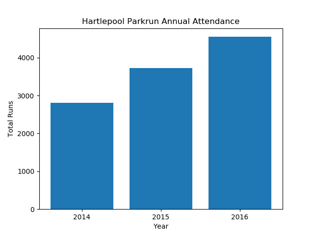
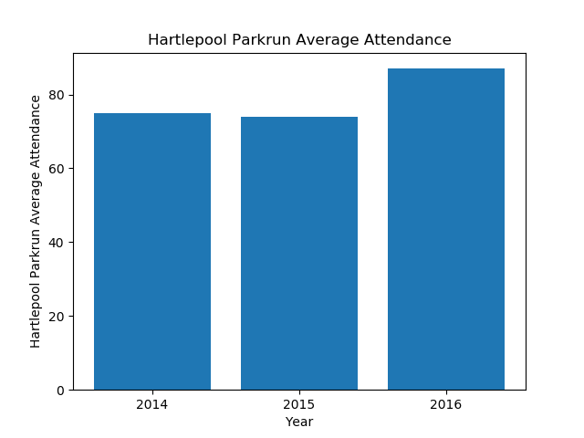
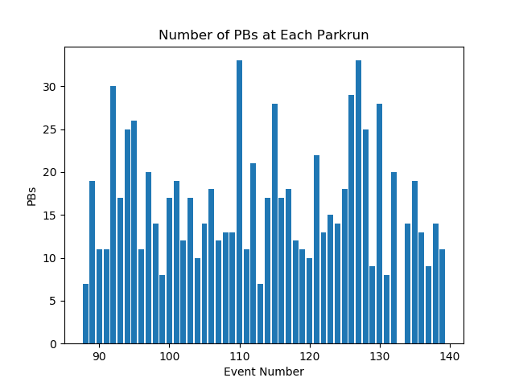
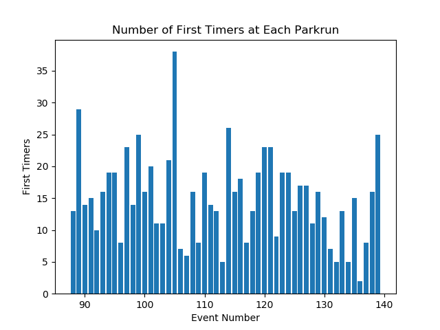

Annual Summary for Hartlepool-Rossmere Parkrun
Annual Attendance
| Year | Number of Events | Average Attendance | Number of Runs | Number of Volunteers | Number of PBs | Number of First Timers |
|---|
| 2014 | 37 | 75 | 2806 | 443 | 722 | 933 |
| 2015 | 50 | 74 | 3723 | 538 | 809 | 666 |
| 2016 | 52 | 87 | 4548 | 561 | 843 | 785 |


Statistics for Events between 01/01/2016 and 31/12/2016
Max Attendance = 126, Min Attendance = 53



Top Participants
Top Volunteers
Total number of volunteering events
| Name | Number of Runs | Number of Volunteers |
|---|
| 1 | Michael WALLER | 0 | 43 |
| 2 | Roy WATKINS | 0 | 34 |
| 3 | Gillian WALLER | 0 | 30 |
| 4 | Christopher WINDRAM | 0 | 29 |
| 5 | Heidi MORRISON | 1 | 22 |
| 6 | Angela LAWLOR | 15 | 16 |
| 7 | Caroline BELL | 5 | 14 |
| 8 | Gurcharan SINGH | 11 | 14 |
| 9 | Susan MCKENNA | 4 | 14 |
| 10 | Graham JONES | 26 | 12 |
| 11 | Helen RICHARDSON | 0 | 12 |
Most Runs
Total Number of Runs in the period
| Name | Number of Runs | Number of Volunteers |
|---|
| 1 | Gill LAMB | 39 | 1 |
| 2 | James WINDRAM | 37 | 4 |
| 3 | Julia WALLER | 36 | 7 |
| 4 | Mark HUTCHINSON | 35 | 0 |
| 5 | Robert MAYES | 33 | 0 |
| 6 | Jo FRANKS | 32 | 0 |
| 7 | Radha VENKATESAN | 31 | 1 |
| 8 | Eleanor HYDE | 29 | 0 |
| 9 | Joanne WILLIS | 29 | 0 |
| 10 | Laura JONES | 29 | 0 |
Time on Feet
Total time spent running in the period.
| Name | Time on Feet (hours) |
|---|
| 1 | Gill LAMB | 23.3 |
| 2 | Jo FRANKS | 20.9 |
| 3 | Radha VENKATESAN | 20.8 |
| 4 | Julia WALLER | 19.4 |
| 5 | James WINDRAM | 16.3 |
| 6 | Leisa SMITH | 14.9 |
| 7 | Joanne WILLIS | 14.6 |
| 8 | Mark HUTCHINSON | 13.8 |
| 9 | Kevin MONAGHAN | 13.6 |
| 10 | Kenneth STRINGER | 13.6 |
Keenest
Total Participation (run + volunteer). Note: Running and volunteering on the same day counts.
| Name | Number of Runs | Number of Volunteers | Total |
|---|
| 1 | Julia WALLER | 36 | 7 | 43 |
| 2 | Michael WALLER | 0 | 43 | 43 |
| 3 | James WINDRAM | 37 | 4 | 41 |
| 4 | Gill LAMB | 39 | 1 | 40 |
| 5 | Graham JONES | 26 | 12 | 38 |
| 6 | Mick SKIRVING | 28 | 9 | 37 |
| 7 | Alison EATON | 27 | 8 | 35 |
| 8 | Mark HUTCHINSON | 35 | 0 | 35 |
| 9 | Leisa SMITH | 25 | 9 | 34 |
| 10 | Roy WATKINS | 0 | 34 | 34 |
Consistency
Smallest variation (standard deviation) in run times.
| Name | Run Time SD (sec) | Number of Runs |
|---|
| 1 | Lee KITCHING | 18.2 | 20 |
| 2 | Richard HODGSON | 21.2 | 10 |
| 3 | James WINDRAM | 22.3 | 31 |
| 4 | Colin CLOSE | 22.4 | 24 |
| 5 | Mick LEWIS | 23.2 | 11 |
| 6 | Mark HUTCHINSON | 27.7 | 35 |
| 7 | Jacob HYDE | 28.2 | 13 |
| 8 | Michael BOLSTER | 31.0 | 12 |
| 9 | Oscar JACKSON | 31.6 | 13 |
| 10 | Sheila HARRISON | 32.6 | 22 |